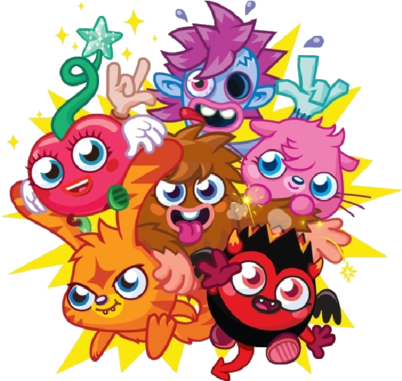

Moshi Monsters was a British web browser massively multiplayer online role-playing game game aimed at children aged 6–12, with over 80 million registered users in 150 territories worldwide. Users could choose from one of six virtual pet monsters they could create, name and nurture.

The servers for the game were officially closed on December 13, 2019, due to the game requiring Adobe Flash Player, however a rewritten version has been created here: https://moshirewritten.com/


 p>Homepage
p>Homepage